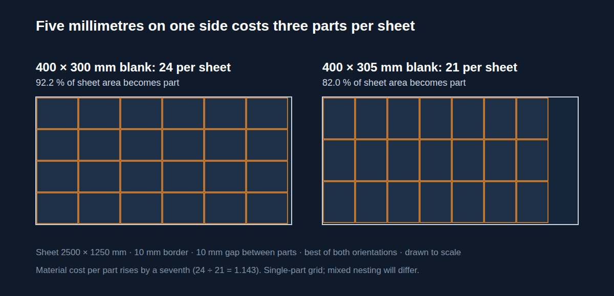
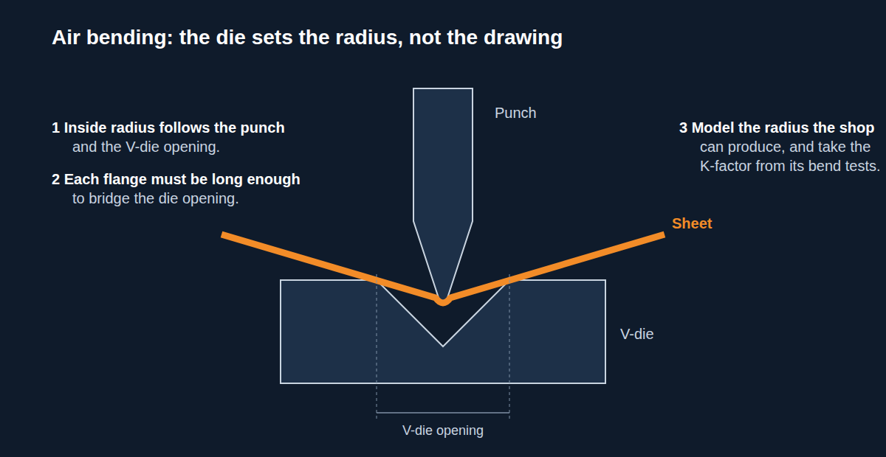
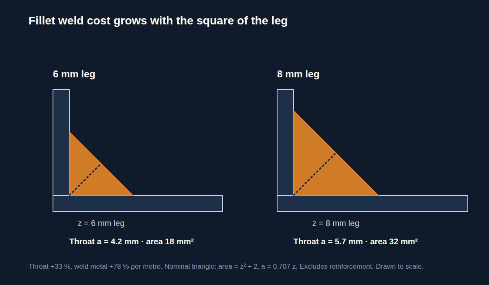

When a fabrication quote comes back high, the usual response is to push the fabricator on price. Sometimes that works. More often the shop has very little to give, because most of the cost was fixed by the drawing they were sent. Design for manufacturing is about catching those costs while they are still dimensions and notes in CAD, which is the only point where changing them is cheap.
We check a lot of fabrication and sheet metal drawings before release. The expensive ones rarely have one big mistake. They have a handful of small decisions nobody costed: a blank slightly too big for a good nest, a bend radius the brake can't produce, ISO 2768 fine called up across the whole sheet, a fillet weld sized up "to be safe". Below is how each of those turns into money, with the arithmetic where there is some.
The Flat Blank Is Priced on the Cutting Table
The shop buys sheet, not parts. Everything between your blanks goes in the skeleton bin and is still on the invoice. So what matters on a laser-cut part is how many blanks nest on the sheet size the shop holds in the rack.
Here is a simple case. A 2500 × 1250 mm sheet, 10 mm clear around the edge, 10 mm between parts, a single rectangular blank nested in whichever orientation fits more. Then the same blank with one side 5 mm longer, which is the sort of change that happens when someone lengthens a flange to look better or rounds a clearance up.
| Flat blank (mm) | Best layout | Blanks per sheet | Sheet area used as part |
|---|---|---|---|
| 400 × 300 | 6 × 4 | 24 | 92.2% |
| 400 × 305 | 7 × 3 | 21 | 82.0% |

The extra 5 mm loses three blanks per sheet, so the material cost of each part goes up by about a seventh (24 ÷ 21 = 1.143). The part works exactly as it did before.
You can check this on a calculator: usable length plus one gap, divided by blank length plus one gap, rounded down, and the same across the width. In practice, the programmer will mix parts on the sheet, and NestingWorks or the machine's own nesting will beat a single-part grid. The point is that flat sizes often sit just either side of a step like this one, and a designer who knows the stock sheet size can usually keep the part on the cheap side. Ask the shop what they stock before you fix the flange lengths.
Let the Press Brake Set the Bend Radius

Most general fab shops air bend. With air bending, the inside radius comes from the punch and the V-die opening. Whatever radius is on the drawing, the part comes out with the radius that tooling makes. If the drawing asks for a radius the shop has no tooling for, they either buy tooling and put it in the price, bend it on what they have and send you a part whose flat pattern no longer matches, or ring you up and park the job until you answer.
None of that is necessary. Get the shop's tooling list, model the radius they will actually produce, and build the flat pattern on it. Take the K-factor from the shop's own test bends in that material and thickness rather than the CAD default. The DXF is only as accurate as the K-factor behind it, and springback varies enough between materials that a default will catch you out.
Then look at the part the way the brake operator will:
- Short flanges. A flange that can't bridge the V-die opening can't be air bent on that die. A narrower die changes the radius, so the short flange quietly changes the flat pattern as well.
- Bend order. Every bend has to be possible after the ones before it. A return flange that hits the punch or the beam on the last hit is either found in CAD or found on the shop floor with a gooseneck punch, if the shop has one.
- Holes close to bends. They pull oval as the material stretches. Move them off the bend line or cut a relief and accept the slot.
That is what designing for the cutting table and press brake looks like day to day: the flat pattern, the tooling, and the bend sequence agree before the DXF goes out. For enclosures and bracket families that will run in batches, a sheet metal DFM review covering bend radius, K-factor, reliefs, and PEM hardware placement usually pays for itself on the first run.
Tolerance: What the Process Can Hold
Any dimension without its own tolerance takes the general tolerance in the title block. ISO 2768-1 sets those by class. An extract for linear dimensions:
| Nominal size range (mm) | Fine (f) | Medium (m) | Coarse (c) |
|---|---|---|---|
| over 30 up to 120 | ± 0.15 | ± 0.3 | ± 0.8 |
| over 120 up to 400 | ± 0.2 | ± 0.5 | ± 1.2 |
| over 400 up to 1000 | ± 0.3 | ± 0.8 | ± 2.0 |
Source: ISO 2768-1:1989, Table 1. Values in mm.
Writing "ISO 2768-f" in the title block because it looks rigorous means every flange height, hole-to-edge distance, and overall length on the sheet has to hold the fine column. Dimensions taken across a bend pick up the variation of every bend in between, and the shop has to measure and prove all of it.
It is cheaper to pick the general class for the process and put tight tolerances only where the function needs them, such as the hole pattern for a bought-in component or the face a bearing locates on. Dimension those from the datum they actually work from, and where you can, keep them on one flat face so the laser holds them, rather than across a bend where it depends on the brake.
Welded frames have their own general tolerance standard, ISO 13920, because a welded structure moves in ways a machined part does not. Machining tolerances on an as-welded frame either buy you a post-weld machining operation or an NCR.
Weld Size Is Paid for in Square Millimetres
Treat a fillet weld as a right-angled triangle with both sides equal to the leg length. Its area is the leg squared over two, and filler metal, arc time, and heat input all go up with that area.
| Fillet leg length z (mm) | Throat thickness a = 0.707z (mm) | Nominal cross-section z² ÷ 2 (mm²) |
|---|---|---|
| 6 | 4.2 | 18 |
| 8 | 5.7 | 32 |

Going from a 6 mm to an 8 mm leg gives a third more throat, which is what carries the load, and 78% more weld metal in every metre of joint. Strength goes up in proportion to the leg; cost goes up with its square.
So size welds from the load the joint actually carries, and put them on the drawing with ISO 2553 symbols so the welder isn't left guessing. An "8 mm all round" note on a lightly loaded bracket is a cost decision even if nobody meant it as one.
Access costs money too. If the welder can't see the joint or can't get the torch in at a sensible angle, the weld is slow and hard to inspect. Check access in the model at the stage the frame is actually welded, with only the members that are tacked in by then, not on the finished assembly.
Fewer Parts, Fewer Setups
Every separate part gets cut, deburred, handled, put in a jig, and joined. A bracket welded to a panel is two parts, a fixture and a weld. Formed as a flange on the panel, it is one part with one extra bend. It won't always work, but it is worth asking every time.
Tabs and slots do a similar job for the parts that do have to be separate. Cut into the blanks; they locate the parts against each other so the laser does the setting out, and they make the assembly hard to put together wrong.
Material belongs here as well. Specify thicknesses and grades the supplier keeps in stock. An odd gauge comes with a minimum order and a lead time, and both turn up in the quote.
Send the Drawing to the Shop Before You Release It
All of these are cheap to change before release and expensive after. Before a drawing goes out for quotation, ask the fabricator who will make it what sheet sizes they stock, what tooling is on their brake, and what tolerances they hold without a second operation. Then draw to the answers.
A design that can be cut and formed on the shop's own kit, welded where the welder can reach, and toleranced for the process will rarely be the high quote. One that can't will stay expensive however hard purchasing pushes.